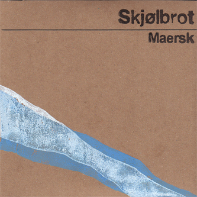

Maersk
“simultaneously beautiful, startling, and haunting” - Foxy Digitalis
Digital Download: Boomkat CDs: sold out
A record I made in 2010, dealing with experiences of space, place and presence: both in sound recording, and more generally, under late capitalism. I felt at the time that, in both cases, and in wealthy countries at least, we increasingly treated place as an immaterial commodity - reduced to atmosphere or colour, divorced from cultural and economic context, and deployed for entertainment. While we imagine our own travel and commodity exchange as frictionless and largely digital, this experience is possible only thanks to the hidden movements of vast, entirely physical, and often quite destructive industry of container ships, propelled by gradients of global economic inequality.

Reviews:
Boomkat: Album of the Week/Highly Recommended - “Amazing debut collection… a deeply engrossing and peculiar soundworld”
Fluid Radio: “Every piece… is an outstanding achievement and taken as a whole, really encompasses the epitome of cinematic sound art. Each work feeds off one another, building to a climax, on “Emma”, that will leave listeners speechless, and this writer, wordless. Getting there is quite a joy to behold.”
The Wire: “There’s an eeriness about the containerisation process, about the automation of the ports and the loneliness and of the ships, and this is what Maersk, with it’s radio broadcasts, piano, electronics and half-erased field recordings, conveys so powerfully.”
Freq: “the musical equivalent of a Mike Nelson installation, in which paradoxical clues scattered around uncanny locations encourage a kind of forensic examination, positioning the listener as a Lovecraftian detective attempting to trace the tracks left by someone or something that is at once human and altogether unknowable.”